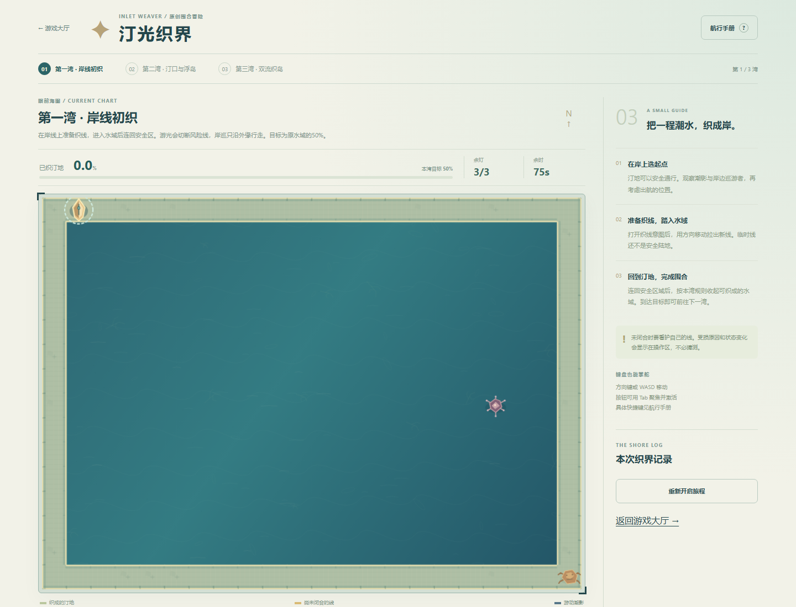
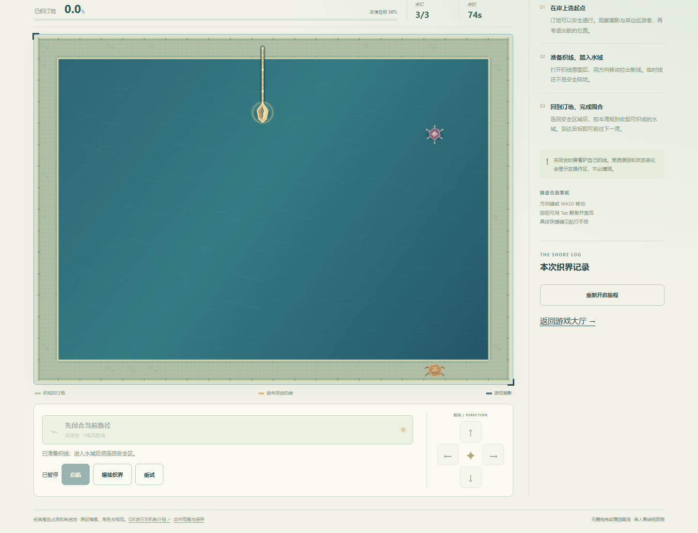
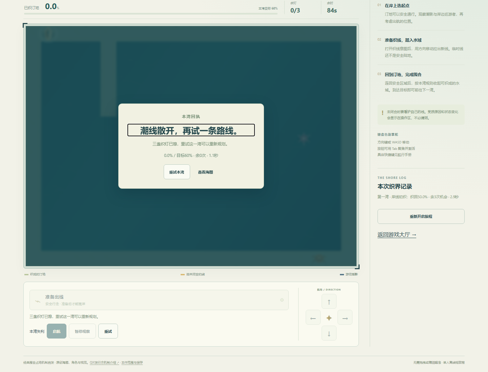
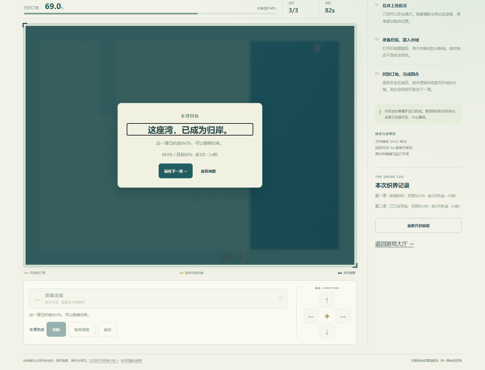
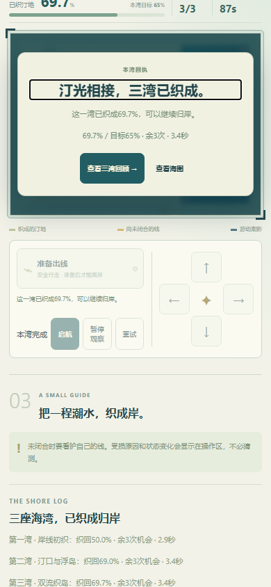
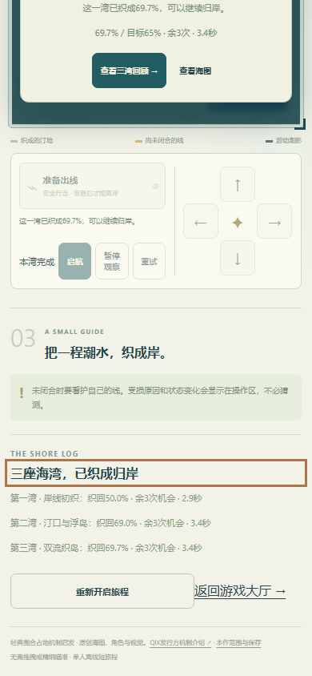
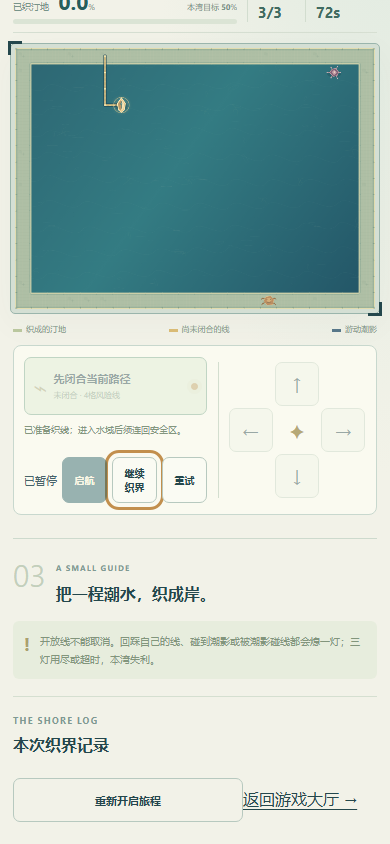

桌面Chromium147 / Windows，390CSS为浏览器尺寸与触控模拟，非真实手机。使用只读几何策略建议与原生方向键/空格；没有注入坐标、时间、胜负、解锁或存档冒称游玩。三关连续实际完成，实际完成档私下保留；公开JSON不含原始浏览器存档。
| 湾 | 局内计时 | 织地 | 余灯 |
|---|---|---|---|
| 1 | 2.88s | 50.00% | 3 |
| 2 | 3.36s | 69.00% | 3 |
| 3 | 3.36s | 69.74% | 3 |
熟练辅助主路线每湾约3秒，这是范围与难度深度限制，非真人品质通过。第二湾回踩线自然失利1.08秒，刷新仍失利；确认当前湾重试保留第一湾航记。活动局开放线刷新先暂停且针/线/潮影/计时不变；关间与实际结局刷新保留，重读回执不追加航记，确认新旅程才重置。
390CSS原生touch模拟验证按住方向、释放、取消、多指释放回退、暂停清输入；无横向溢出。键盘按钮、画布快捷键和回大厅短验。不是全手机、真人合作或手感验收。
纯模型10次合法路线胜利、2类自然失败；第二三湾各两条可行思路，50/100ms输入间隔。覆盖多敌分区不吞敌、合法闭合、越界、自交回踩、碰撞、开放线/终态恢复与畸形档拒绝。7组旅程/隔离存储边界通过。浏览器配额写失败、恢复成功、坏档原字节与其他游戏哨兵保全是明确故障夹具，不是现实设备故障实测。
普通UI记录 · 模型路线和边界 · 旅程存储检查 · 浏览器故障夹具 · 触控织线与44目录短回归 · 范围与来源
未验：无辅助真人乐趣、长期难度、触控真机/性能与审美；本作无音频。未改旧43项、原72图鉴、四个停止项目及旧存档。






